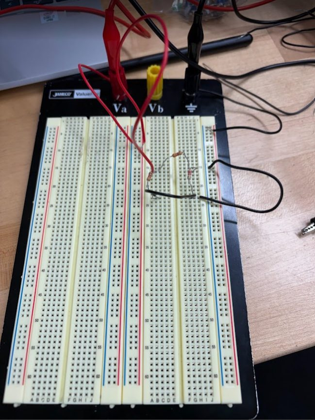
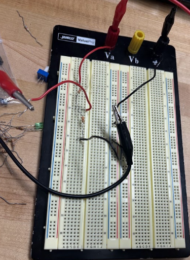

NJIT / ENGINEERING PORTFOLIO
Oluwadunsin
Olatunji.
Electrical & Computer
Engineering Technology student
I’m an 18-year-old student at the New Jersey Institute of Technology, building a practical foundation in engineering through circuits, robotics, and technical problem-solving.

LEARNING BY BUILDING
From understanding a circuit to troubleshooting a system, I’m interested in how engineering ideas become practical solutions.
More about meHANDS-ON EXPLORATION
Inside the circuit lab.

CIRCUIT ANALYSIS / AC & DC LAB
Putting electrical principles into practice.
Building and testing resistor circuits, applying Ohm’s law, and measuring electrical quantities with laboratory equipment.
Explore the lab work ↗MY TOOLKIT
Technical foundations.
01 / ELECTRICAL
Circuits & prototyping
AC/DC analysis, breadboards, and laboratory measurements.
02 / DESIGN & CODE
Tools for building
AutoCAD, Tinkercad, Python, and Google Colab.
03 / PRACTICAL EXPERIENCE
Systems & robotics
IT troubleshooting, robot programming, and hands-on mentoring.